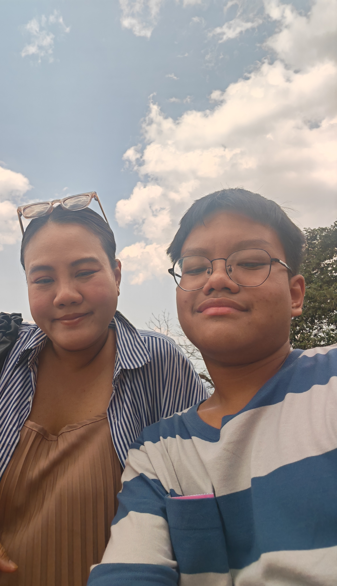

วันแม่แห่งชาติ💔🥀
สิ่งที่อยากบอกแม่
แม่มีอายุ 38 ปี แม่เป็นคนที่พยายามเลี้ยงผมอย่างดี บางที่แม่ก็โกรธบ้าง ดุบ้าง ด่าบ้าง แต่ก็ทำด้วยความห่วงใย แม่ทำอาหารให้ เลี้ยงข้าวให้ ออกค่าเรียนให้ เลี้ยงดูอย่างห่วงใยและตั้งใจ ขอขอบคุณที่แม่คอยเลี้ยงดูผมมาสิบสี่ปี รักแม่นะครับ

บทกลอนมอบสู่แม่
ลูกคนนี้รักคุณแม่ตลอดมา
ทุกเวลาไม่ว่าจะเป็นวันไหน
ถ้าหยุดยาวตัวลูกน้อยจะกลับไป
เอาดวงใจที่สดใสสู่บ้านเรา
แม่คือพระคือนางฟ้าเทวดา
ให้กำเนิดเกิดลูกมาเลี้ยงจนใหญ่
ดูแลลูกไม่ให้มีอันตราย
สักการะจากหัวใจของลูกเอย